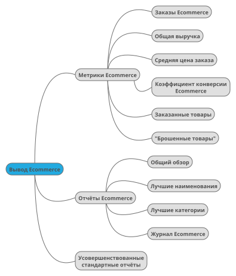

Аналитика электронной коммерции
Интегрировав Piwik с вашим приложением для электронной коммерции, вы сможете проанализировать доходы, заказы, коэффициенты конверсии, средние значения заказов и детализированную статистику по продуктам, что позволит узнать какие товары пользуются большей популярностью и имеют наибольший коэффициент конверсии.
Аналитическая платформа позволяет просмотреть детальные журналы электронной коммерции в режиме реального времени, включая информацию о посетителях, что ушли со страницы, оставив продукты в «продуктовой корзине».